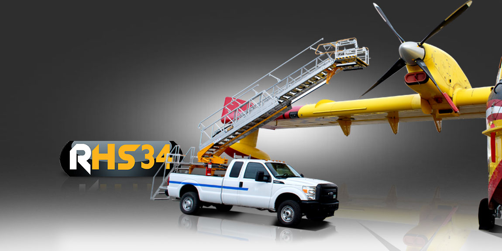
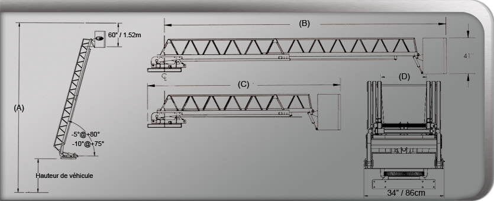

Spécifications Techniques
| Est. working height (A) | 10.3m (34') |
| Horizontal reach (B) | 8.51m (27' 11") |
| Length (retracted) (C) | 4.97m (16' 4") |
| Interior width (D) | 60 cm (23") |
| Bucket capacity | 159 kg (350 lbs) |
| Lifting ring | 250 kg (550 lbs) |
| Rotation | 360° continuous opt. |
| Elevation degrees | -0° to 85° |
| Approx. weight | 567 kg (1250 lbs) |
| GVWR min. required | 4309 kg (9500 lbs) |
| Hydraulic pressure | 20684 kPa (3000 psi) |
La RHS34 est une plateforme télescopique non isolée qui propose des marches avec une hauteur de travail de 34 pieds (10,36 m) et avec une portée latérale de 26,7 pieds (8,14 m). Le «S» dans le nom RHS34 fait référence à “Step” (marche) car elle peut être utilisée comme une plateforme parfaitement “plate” ou elle peut se déployer pour devenir une cage d'escalier à 60 degrés.
Cette unité reflète l'engagement de la Recherche & Développement de l’entreprise qui a été développée conjointement avec le SOPFEU du Québec. La RHS34 est adaptée aux exigences spécifiques allant de la maintenance des avions au milieu aéroportuaire ainsi que beaucoup d’autres activités sans compromettre la sécurité. Cette unité peut être montée sur beaucoup de châssis plus petits.
La robustesse et la qualité pour lesquelles RH Équipement Aérien est reconnu résident dans l’utilisation de l’acier STRENX et son poids léger permet au véhicule de se déplacer plus rapidement et d'être plus efficace. L'option clés en main est disponible. Contactez-nous pour voir ce que nous pouvons faire aussi bien pour le choix de votre véhicule que celui du dispositif.
Le branchement de la batterie auxiliaire isole l’équipement aérien du véhicule. La nacelle fonctionnera sans que le véhicule soit en fonction. En aucun cas cela n'affectera la batterie du véhicule. À la limite, c'est une sécurité additionnelle, car si la batterie du camion a besoin d’un petit “boost”, dû au type de connexion, elle pourra s’alimenter sur la batterie auxiliaire. Toutes nos installations sont dotées d’un séparateur bidirectionnel entre la batterie auxiliaire et celle du véhicule. Nous ne faisons aucune modification à votre véhicule, seulement un fil connecté à l’alternateur qui sert à recharger la batterie auxiliaire quand le véhicule est en marche.
De plus, nous pouvons vous offrir une sécurité supplémentaire en vous offrant un système tel que Ozone-tech. Ce produit oblige l’utilisateur du véhicule à retirer la clé du contact et à presser un bouton activateur pour faire fonctionner la nacelle. Ce qui est parfait pour les propriétaires de flottes qui veulent avoir un certain contrôle. Le système assure une gestion optimale de la batterie et, au besoin, fait tourner le moteur du véhicule pour assurer une recharge complète des batteries.
Note Importante
Cet équipement à nacelle doit généralement être installé sur un véhicule dont le PNBV (Poids Nominal Brut Véhicule) est supérieur à 9500 lb (4309 kg) et qui ne nécessite pas de pattes stabilisatrices. Par contre, cette dernière condition n’est pas universelle et doit dans la majorité des cas être déterminée lors des tests de stabilité de votre camion nacelle.
Il en est de même pour la capacité au panier (c’est-à-dire le poids autorisé dans la nacelle). Cette échelle télescopique a la capacité de supporter 350 lb (159 kg), mais c’est le véhicule porteur qui dictera sa capacité de charge.
N’hésitez pas à contacter votre manufacturier d’engins élévateurs à nacelle Robert Hydraulique inc. pour obtenir plus d’informations sur les contraintes et les notions à prendre en compte lors de l’installation d’une échelle aérienne télescopique RH afin de rencontrer les plus hauts standards de qualité et de sécurité.
*** Veuillez vous assurer que toutes les règlementations locales seront respectées lors de l’installation de votre équipement d’échelle télescopique à nacelle. Robert Hydraulique inc. ne se tient pas responsable des installations effectuées hors de son usine.
Dessin Technique & Dimensions
